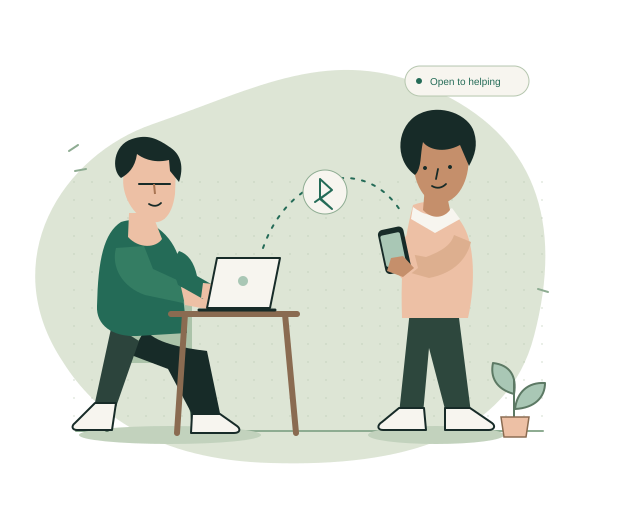

onya.A LITTLE CLOSER. A LITTLE KINDER.
GOOD ON YOU FOR HELPING
No internet.
A little help
nearby.
Nearby people. A connection by choice.
Peer-to-peer text chat over Bluetooth Low Energy.

GOOD ON YOU FOR HELPING
Nearby people. A connection by choice.
Peer-to-peer text chat over Bluetooth Low Energy.
